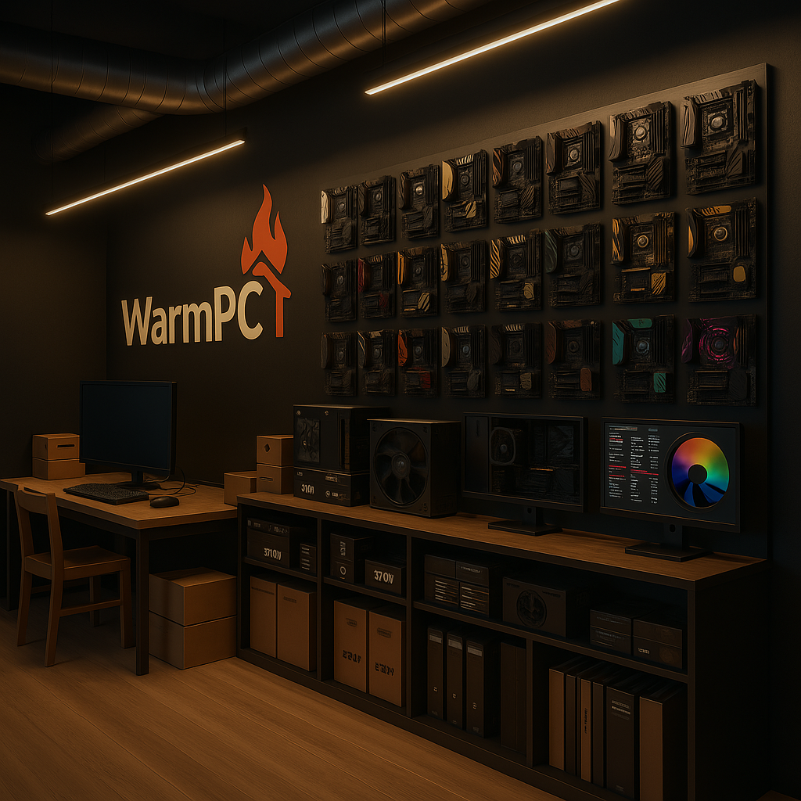
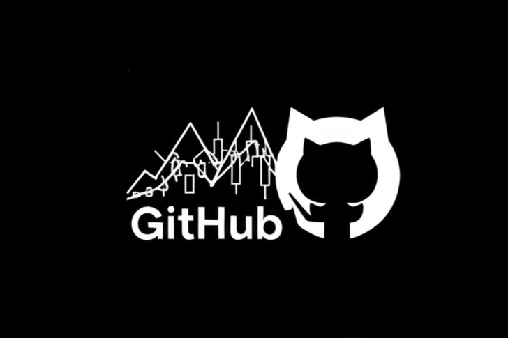
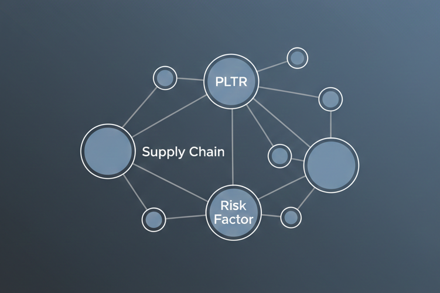
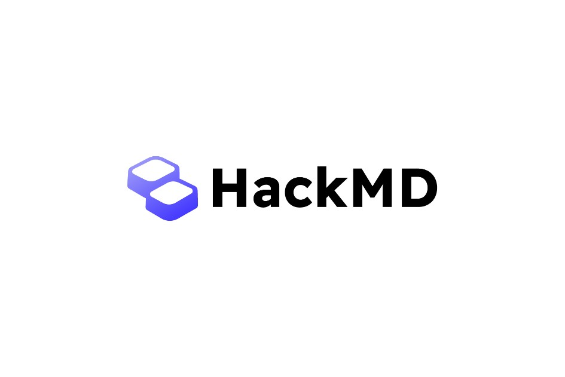

E-commerce Website
- Developed a comprehensive e-commerce website.
- Utilized HTML, CSS, JavaScript, and PHP for development, with XAMPP (including MySQL database) for local environment and data management.
- Implemented core features including user authentication (membership system) and administrator accounts.
- Successfully integrated various common e-commerce functionalities found in typical online shopping platforms.
- Created a domain using DuckDNS.

Discord News Bot
- Developed a Discord bot automating the delivery of stock market insights and GitHub trending repositories.
- Implemented AI for summarizing news and translating content into Traditional Chinese.
- Utilized scheduled jobs to provide timely updates on market and developer trends.
- Employed NewsAPI, Alpha Vantage, and a GitHub Trending API for data acquisition.

AI Financial Supply Chain Risk Knowledge Graph
- A fully automated AI Financial Supply Chain Risk Analysis System designed for rapid market insights.
- Powered by advanced Large Language Models (GPT-4o/5.2) to extract complex entity-relation triples from real-time financial news.
- Enhanced with a custom Auto-Verifier to eliminate AI hallucinations and a quantitative Market Sentiment Analyzer.
- Generates highly interactive Knowledge Graphs with dynamic sentiment watermarks for intuitive visual analysis.
- Offers a seamless user experience through a Streamlit Web App, enabling one-click execution via stock tickers.

AI Learning Path Generator
- A dynamic AI-Driven Learning Path Generator designed to solve the cognitive cold-start problem for any unknown technical or theoretical domain.
- Powered by Large Language Models (GPT-5.2) and Pydantic Structured Output to strictly decompose complex topics into granular, dependency-mapped learning nodes.
- Enhanced with a robust Graph Validation Engine (NetworkX) to construct Directed Acyclic Graphs (DAGs), actively detecting and resolving circular dependencies.
- Integrates a custom Semantic Reranking Pipeline using vector embeddings and Cosine Similarity to fetch and rank the most relevant tutorial videos via the YouTube Data API.
- Delivers an interactive user experience through a Streamlit Web App, featuring zoomable Mermaid.js topology maps, dynamic level calculation, and API caching.

My Digital Notes
- Programming Language Notes: A collection of my learning journey, code snippets, and insights into various programming concepts and practices.
- Stock Market Knowledge: My detailed observations, analyses, and strategies on investing, market trends, and financial literacy.
- Travel Records: Personal chronicles and reflections from my explorations around the world, including itineraries, experiences, and cultural insights.